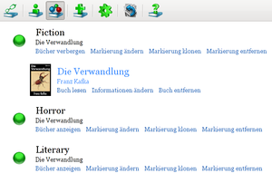

FBReader
Dieser Artikel wurde für die folgenden Ubuntu-Versionen getestet:
Ubuntu 14.04 Trusty Tahr
Zum Verständnis dieses Artikels sind folgende Seiten hilfreich:
Der FBReader  ist ein Programm, um E-Books in verschiedenen Formaten anzuzeigen. Dies klappt allerdings nur, wenn diese nicht über diverse Techniken zur "Digitalen Rechteverwaltung" (DRM) geschützt sind. Da sowohl die Grafikbibliotheken GTK+ als auch Qt unterstützt werden, harmoniert das Programm mit allen Desktop-Umgebungen. Daneben ist noch eine Version für Android verfügbar.
ist ein Programm, um E-Books in verschiedenen Formaten anzuzeigen. Dies klappt allerdings nur, wenn diese nicht über diverse Techniken zur "Digitalen Rechteverwaltung" (DRM) geschützt sind. Da sowohl die Grafikbibliotheken GTK+ als auch Qt unterstützt werden, harmoniert das Programm mit allen Desktop-Umgebungen. Daneben ist noch eine Version für Android verfügbar.
Unterstützte Formate:
EPUB (kein EPUB3)
FictionBook (FB2)
Open eBook (OEB)
Mobipocket (nur DRM-freie Dateien)
DOC (MS Word) (ab Version 0.99)
u.a. (siehe Electronic book formats (supported and unsupported)
)
Eine Alternative speziell für KDE-Nutzer ist Okular, während das desktop-unabhängige Calibre neben der Lesefunktion noch eine komplette E-Book Verwaltung inkl. Konvertierungsfunktion mitbringt. Das Windows-Programm SumatraPDF  , das mit Wine unter Linux genutzt werden kann, unterstützt ebenfalls viele E-Book Formate.
, das mit Wine unter Linux genutzt werden kann, unterstützt ebenfalls viele E-Book Formate.
Installation¶
 Das Programm ist in den offiziellen Paketquellen enthalten. Folgendes Paket muss installiert [1] werden:
Das Programm ist in den offiziellen Paketquellen enthalten. Folgendes Paket muss installiert [1] werden:
fbreader (universe)
 mit apturl
mit apturl
Paketliste zum Kopieren:
sudo apt-get install fbreader
sudo aptitude install fbreader
Unter Ubuntu normalerweise die GTK-Variante installiert. Diese Variante kann auch erzwungen werden, in dem man zuerst folgendes Paket installiert:
libzlui-gtk (universe)
mit apturl
Paketliste zum Kopieren:
sudo apt-get install libzlui-gtk
sudo aptitude install libzlui-gtk
Möchte man die Qt-Version haben, installiert man stattdessen das Paket:
libzlui-qt4 (universe)
mit apturl
Paketliste zum Kopieren:
sudo apt-get install libzlui-qt4
sudo aptitude install libzlui-qt4
bevor man FBReader selbst installiert.
Entwicklungsversion¶
Die aktuelle Beta-Version ist als Fremdpaket (.deb) verfügbar. Derzeit liegt FBReader nur als Qt-Version vor, an einer GTK-Version wird noch gearbeitet (Stand: September 2012).
Über die Downloadseite  lädt man die beiden Pakete
lädt man die beiden Pakete
libunibreak1_1.0-1_ARCHITEKTUR.deb
fbreader_0.99.x-1_ARCHITEKTUR.deb
passend zur eigenen Systemarchitektur (32-/64-Bit) herunter und installiert sie manuell [2] (libunibreak1 bitte zuerst).
Hinweis!
Fremdpakete können das System gefährden.
Verwendung¶
Bei Ubuntu-Varianten mit einem Anwendungsmenü startet man das Programm über den Menü-Eintrag "Büro -> E-book reader" (oder "Büro -> FBReader"), unter Unity gibt man einfach den Programmnamen ein [3].
Über die Titelleiste oben sind die verschiedenen Programmfunktionen erreichbar.
| Funktionen | |
| Schaltfläche | Beschreibung |
| Bibliothek anzeigen | |
| Datei zur Bibliothek hinzufügen | |
| Zum Textanfang | |
| Seite zurück | |
| Seite vorwärts | |
| Inhaltsverzeichnis | |
| Textsuche (im aktuellen Dokument) | |
| Vorherige suchen | |
| Weitersuchen | |
| E-Book Infos anzeigen | |
| Einstellungen anzeigen | |
| Text drehen | |
| Version und Hilfe | |
Bibliothek¶
| Bibliothek mit Sortierung nach Autor |
FBReader führt eine Verlaufsliste bereits gelesener Bücher, die als "Bibliothek" bezeichnet wird. Neue E-Books lassen sich über "Datei zur Bibliothek hinzufügen" hinzufügen.
Wenn sich der Speicherort einer Datei ändert, gibt es naturgemäß Probleme mit der Bibliothek. Allerdings ist das Programm so clever, nicht mehr auffindbare Dateien automatisch aus der Liste zu entfernen. Prinzipiell kann man dem entgegenwirken, wenn man eigene E-Books in einem speziell dafür eingerichteten Ordner sammelt, z.B. ~/Dokumente/E-Books/ im Homeverzeichnis. Diesen Ordner sollte man dann in den Programmeinstellungen eintragen.
Innerhalb der Bibliothek kann entweder nach Autoren oder nach Stichworten (z.B. Genre-Tags) sortiert werden. Einige E-Book Formate enthalten bereits Tags wie z.B. "Fiction" oder "Horror", ansonsten kann man bis zu vier Stück über "Informationen ändern" oder die Schaltfläche im Lesemodus eingeben (siehe auch Book tags in FBReader ).
Lesemodus¶
|  |
| Bibliothek mit Sortierung nach Stichworten |
Der Lesemodus ist betont unaufdringlich. Mit den
Bild ↓ und
Bild ↑ (oder  und
und  oder den entsprechenden Schaltflächen auf der Symbolleiste) blättert man wie in einem Buch bequem seitenweise vor- oder rückwärts (mit Seite ist hier der auf dem Bildschirm sichtbare Text gemeint). Texte werden automatisch (mit Silbentrennung) innerhalb des Programmfensters umgebrochen. Die Taste
⏎ schaltet zwischen Fensteransicht und Vollbildmodus hin und her, was aber – je nach Bildschirmformat – das Lesen nicht wirklich erleichtert. Über die Schaltfläche gelangt man zum Inhaltsverzeichnis des Buchs.
oder den entsprechenden Schaltflächen auf der Symbolleiste) blättert man wie in einem Buch bequem seitenweise vor- oder rückwärts (mit Seite ist hier der auf dem Bildschirm sichtbare Text gemeint). Texte werden automatisch (mit Silbentrennung) innerhalb des Programmfensters umgebrochen. Die Taste
⏎ schaltet zwischen Fensteransicht und Vollbildmodus hin und her, was aber – je nach Bildschirmformat – das Lesen nicht wirklich erleichtert. Über die Schaltfläche gelangt man zum Inhaltsverzeichnis des Buchs.
Beim nächsten Programmstart wird automatisch das zuletzt geöffnete E-Book geöffnet – exakt an der Stelle, an der das Programm beendet wurde.
Einstellungen¶
Über die Schaltfläche gelangt man zu den Programmeinstellungen, die über diverse Reiter (Tabs) verteilt sind. Gespeichert werden diese im versteckten Ordner ~/.FBReader/. Die optisch wichtigste ist wahrscheinlich die verwendete Schriftart, die man bei Bedarf unter "Stile" dem eigenen Geschmack anpassen kann.
In der aktuellen Beta-Version sind die vielfältigen Einstellungsmöglichkeiten leicht überarbeitet worden. Ein oder mehrere thematisch zusammengehörige Reiter sind nun als eine Rubrik zusammengefasst (beispielsweise alle die Buchdarstellung beeinflussenden Optionen).
Links¶
fbreader
- Neuigkeiten zur Entwicklung
FBReader - Wikipedia
CoolReader - alternativer E-Book-Reader
kostenlose E-Books
- im EPUB-Format zur privaten, nicht-kommerziellen Nutzung
- Erstellt mit Inyoka
-
 2004 – 2017 ubuntuusers.de • Einige Rechte vorbehalten
2004 – 2017 ubuntuusers.de • Einige Rechte vorbehalten
Lizenz • Kontakt • Datenschutz • Impressum • Serverstatus -
Serverhousing gespendet von